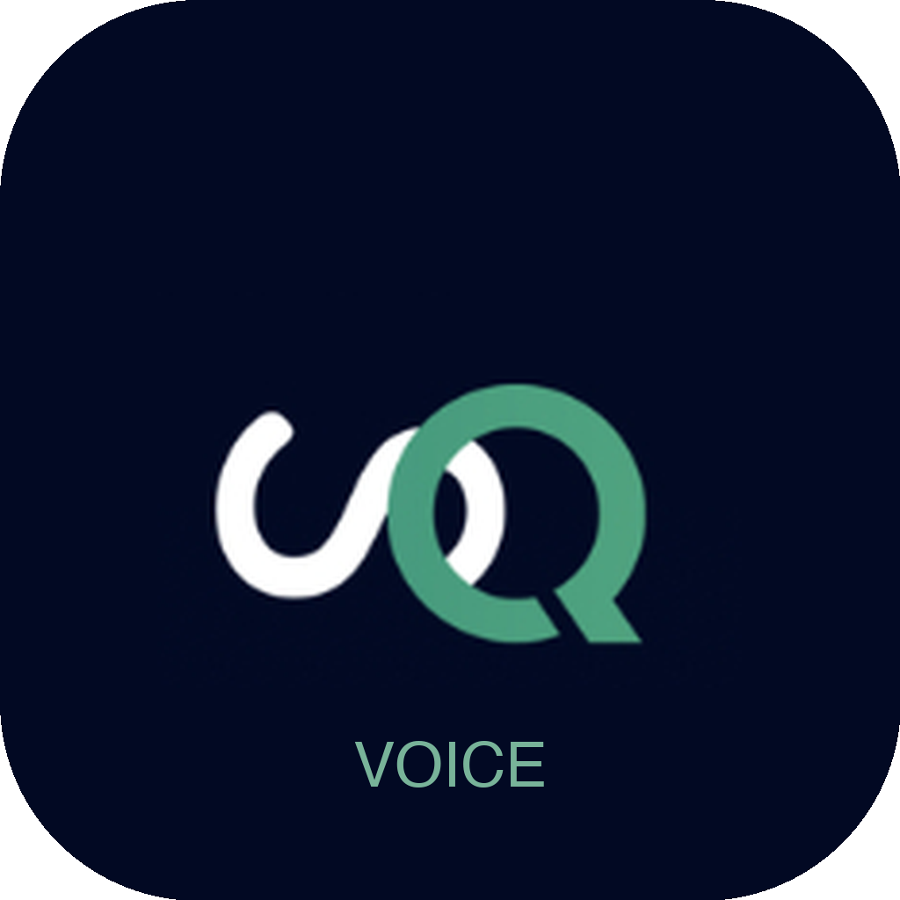

Dictado por voz que nunca sale de tu computadora. Presiona un atajo, habla, y el texto aparece donde está tu cursor.
Todo se procesa en tu computadora. Tu voz nunca sale a internet. Sin cuentas, sin suscripciones.
Sin iconos en el dock o barra de tareas. Solo aparece cuando lo necesitas con el atajo de teclado.
Detecta automáticamente el idioma o configura uno fijo. Soporta español, inglés, y 90+ idiomas.
Configura las teclas que quieras. Mac: ⌥ Space por defecto. Windows: Ctrl+Space por defecto.
/Applications⌥ Space)Más información → Ejecutar de todas formasCtrl+Space → habla → presiona Ctrl+Space otra vez → texto pegado